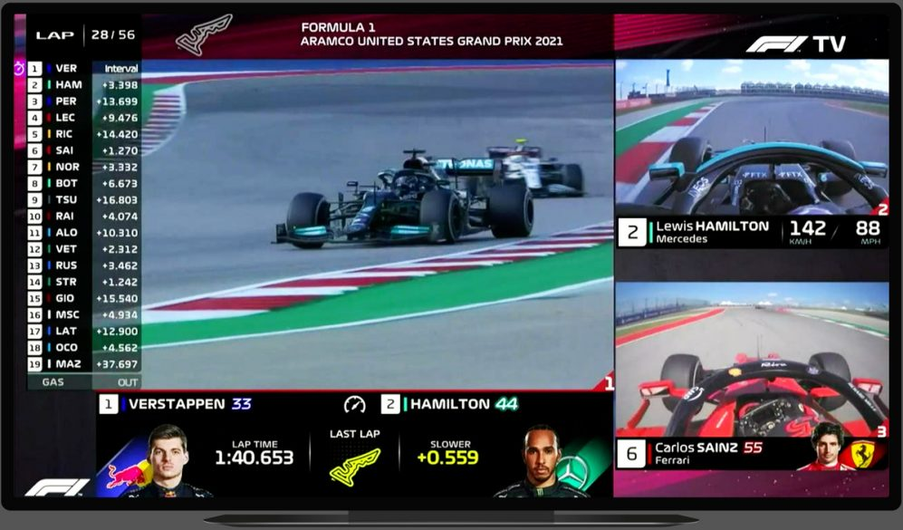
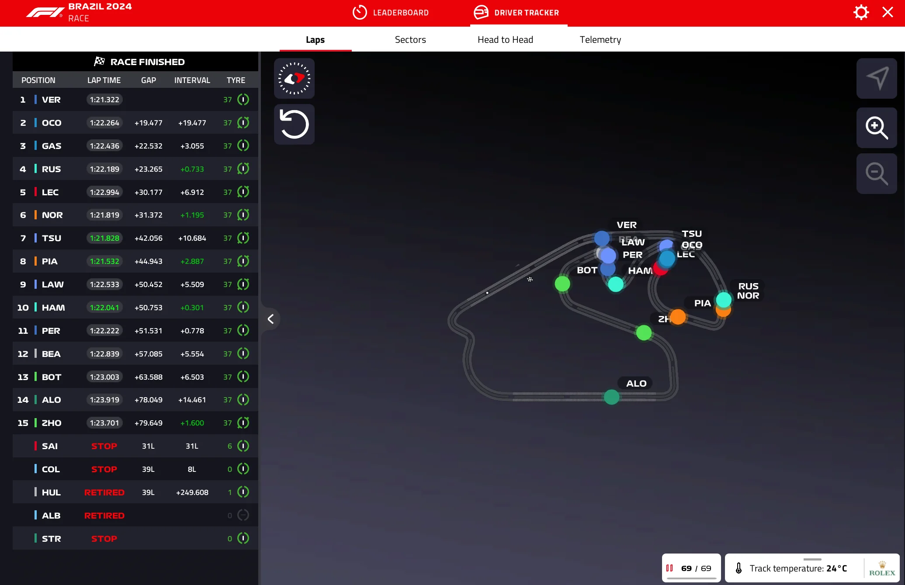

Formula1 TV
Es una Applicaccio de streaming on transmiten las carreras.

Sobre el projecte:
La intencion en este projecto es que la gente los fanes de la F1 puedan ver las carreras mediante a una applicacion donde hay suscripciones con ventajas y donde puedes ver mas de una camara de piloto, comparaciones, tiempos etc...
COM ES VA FER:
La pagina se hizo con muchos codigos pero especificamente con java y kotlin donde si le das por ejemplo a el boton de tiempos te va a salir el tiempo de cada piloto a tiempo real y mucho mas .....
